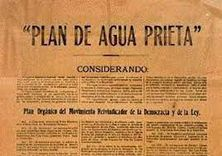
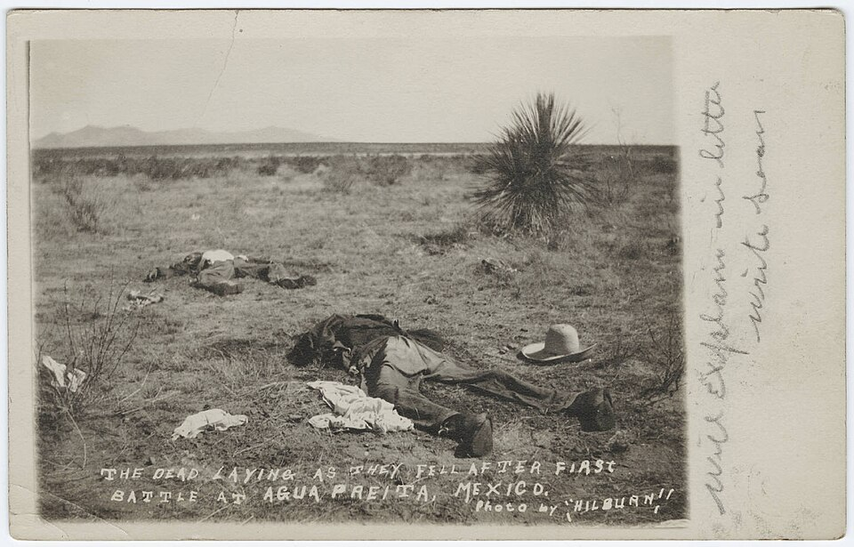
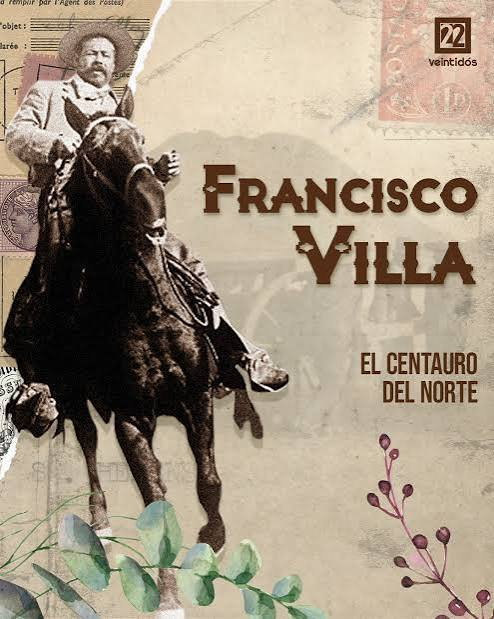
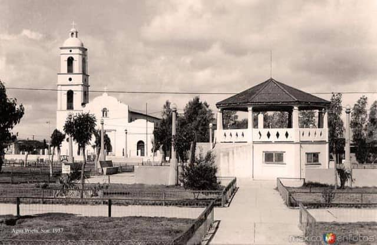
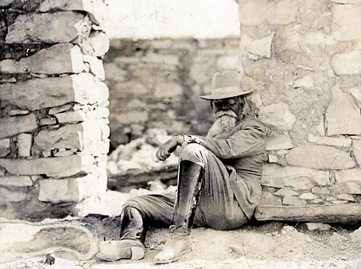
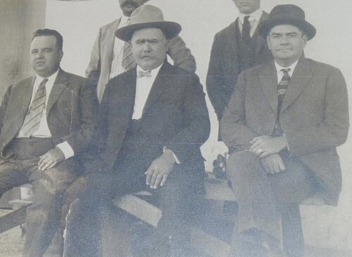

Centro Internacional de Divulgación Científica e Histórica
La frontera donde la Revolución cambió de rumbo. Agua Prieta, Sonora · 1915.
Seis entradas editoriales para descubrir cómo una ciudad fronteriza se volvió clave en la Revolución Mexicana.






Villa y la Gran Guerra es una plataforma de divulgación histórica, turismo cultural y experiencias del norte de México. Cada visitante es un embajador.
Comenzar la experiencia